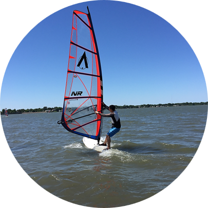

IP-BOX 简介
IP-BOX汇聚了我在教育、科研和发明领域，特别是在专利知识上的专业积累。本平台致力于这些资源和信息的交流与分享，集合了与行业同仁共创的一系列文章，旨在提供精确、实用的知识资源。我们希望这些内容能够为涉足知识产权领域的人们提供必要的指导与坚实的支持，助力这一领域的探索与发展。
关于我

Dr. Bo Xiao
作为一名的电子工程博士，我的职业生涯融合了学术研究、知识产权管理、专利策略以及跨领域的技术创新。起初，作为一名热衷于发明的科研人员，深入知识产权领域，处理自主研发的发明专利，在生物化学传感器、纳米技术和光学图像处理等多个前沿科技领域取得了显著成就，并成功实现所有专利技术的授权。
我对知识产权和专利工作充满激情，至今仍然活跃在高新技术研发的最前线，特别是在集成感应芯片和先进图像处理技术等领域发挥着重要作用。多年的丰富职业经验为我提供了对专利和知识产权全面深入的理解，这不仅涉及科研过程中的知识产权指导，还包括技术创新与专利法律相互交织的复杂领域。这种全方位的洞察力赋予我在知识产权领域内独特的专业素养和优势。